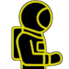

Menu

Nesca SC
Version 0.3.0
Read the documentation here
Input
Output
Options
Word-list mode
Old-to-new mode
Debug mode
Show keyboard
Editor wrap lines
Word divider (newline is default. "\n" for newlines):
File save / load
File name:
Examples
Default
Sound changes
Keyboard
æ
ɐ
ʌ
ɑ
ɒ
á
à
ā
ã
ą
ạ
ä
å
β
ɓ
ç
ɕ
ć
č
ð
ɖ
ɗ
ᶑ
ḍ
đ
ɛ
ə
ɘ
ɜ
é
è
ē
ẽ
ę
ẹ
ë
ɠ
ɢ
ʛ
ǧ
◌ʰ
ħ
ɦ
◌ʱ
ʜ
ḥ
ɪ
ɨ
í
ì
ī
ĩ
į
ı
ï
◌ʲ
ʝ
ɟ
ʄ
ɫ
ɺ
ɭ
ɬ
ʟ
ɮ
ƛ
ḷ
ł
◌ᵐ
◌ⁿ
ɳ
◌ᶯ
ɲ
◌ᶮ
ŋ
◌ᵑ
ɴ
◌ᶰ
ň
ñ
ṇ
ń
ø
œ
ɵ
ɔ
ó
ò
ō
õ
ǫ
ọ
ӧ
ơ
ɾ
ɹ
ʁ
ʀ
ɻ
ɽ
ř
ṛ
ʃ
ʂ
š
ṡ
ś
ş
ʈ
ṭ
ŧ
ʊ
ʉ
ɯ
ú
ù
ū
ũ
ų
ü
ư
ⱱ
ʋ
◌ʷ
ɰ
ʍ
χ
ʏ
ɤ
ý
ỳ
ȳ
ỹ
y̨
ÿ
ʎ
ɣ
◌ˠ
ɥ
◌ᶣ
ʒ
ʐ
ʑ
ž
ẓ
ź
◌ʼ
ʻ
ꞌ
ʔ
◌ˀ
ʢ
ʡ
ʕ
◌ˤ
ʘ
ǀ
ǁ
ǂ
‼︎
ɸ
θ
þ
…
`
~
∅
→
◌¹
◌²
ˈ◌
ˌ◌
◌ː
◌ˑ
◌̆
◌͡◌
◌͜◌
ꜛ
ꜜ
◌̋
◌́
◌̄
◌̀
◌̏
◌̌
◌̂
◌᷄
◌᷆
◌᷈
◌̃
◌̰
◌̤
◌̈
◌̽
◌̩
◌̯
◌̬
◌̥
◌̟
◌̠
◌̝
◌̞
◌̘
◌̙
◌̹
◌̜
◌̪
◌̺
◌̻
◌̼
◌˞
◌̚
◌͈
◌͉
◌̉
◌̓